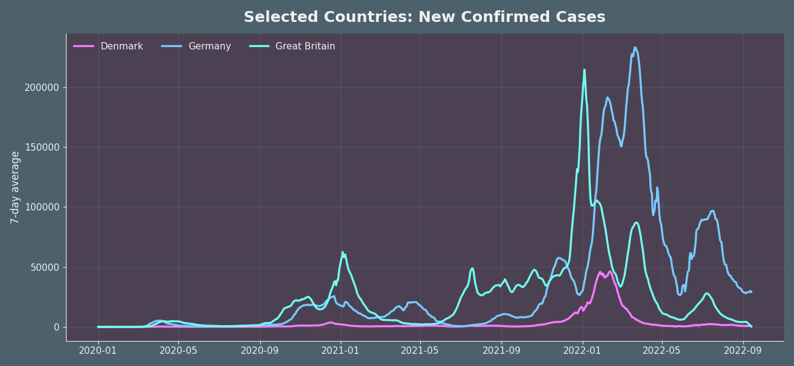

Section 1
A Virus Goes Global
In late 2019, a novel coronavirus emerged in Wuhan, China. Within months it had crossed every border on earth. By March 2020, the World Health Organization declared a pandemic — the first in over a century to bring global society to a near-standstill.
The map below shows how confirmed cases accumulated country by country over the course of the pandemic. Watch the virus trace the routes of global travel, then fan out into the interior of every continent.
Confirmed new cases per million people, by month. Data: Google COVID-19 Open Data.
Section 1 — continued
A crisis that moved in waves
Governments around the world scrambled to contain the spread, but the virus moved faster than policy could respond. Each wave brought new variants, new restrictions, and new lessons — though not all countries absorbed those lessons at the same pace. The first wave of early 2020 was characterized by uncertainty and improvisation; later waves hit populations that were exhausted, polarised, and increasingly divided over the legitimacy of restrictions.
The stringency index below captures the aggregate tightness of government restrictions over time — school closures, workplace rules, travel bans, and stay-at-home orders combined into a single score. Notice how the world briefly exhaled in summer 2020, then tightened again as the second wave arrived, and again for Omicron in early 2022.
Average Government Stringency Index (7-day avg) for selected countries. Data: Google COVID-19 Open Data.
Section 2
One shared pandemic, national timelines
While the virus paid no attention to borders, the human response was deeply national — shaped by healthcare infrastructure, political culture, public trust, and geography. Countries that appeared similar on paper diverged sharply in their epidemic trajectories. The difference between a well-managed wave and an overwhelmed health system often came down to decisions made in the first weeks.
To understand what made the difference, we narrow our lens to three European neighbours: Denmark, Germany, and the United Kingdom. Each country faced the same virus, the same variants, and broadly similar healthcare systems — yet their epidemic curves diverged in telling ways.
Section 2 — continued
The same virus, different waves
Denmark moved swiftly and decisively, closing schools and borders before most of Europe had registered its first deaths. Germany leaned on its federal structure and strong ICU capacity to absorb successive waves. The UK endured one of the highest death tolls in Western Europe before eventually leading the world in vaccine rollout speed.
The chart below tracks the 7-day rolling average of new confirmed cases across all three countries through to late 2022. The Omicron wave of early 2022 stands out as a unifying shock — but notice how differently each country entered and exited that peak.

7-day rolling average of new confirmed cases. Denmark (pink), Germany (blue), Great Britain (teal). Data: Google COVID-19 Open Data.
Section 2 — continued
Cases were not the whole story
Confirmed case counts are shaped as much by testing capacity as by true infection rates. Countries that tested widely recorded more cases; those with limited infrastructure undercounted. To compare fairly across nations, we need to look beyond raw case numbers — at deaths, at hospitalisations, at the policies governments put in place, and at the interventions that ultimately changed the course of the pandemic.
Section 3
The Age of Lockdown
The pandemic triggered an unprecedented experiment in social control. For the first time in modern history, billions of people were asked — and in many countries legally required — to stay home, close their businesses, keep their children out of school, and forgo ordinary life for an indefinite period.
The human cost of these restrictions was enormous: lost livelihoods, deferred education, strained mental health, and widening inequality. But the epidemiological argument was real: mobility data showed that when people moved less, the virus spread less. The question was never whether restrictions worked in theory — but how long they could be sustained, and at what price.
Section 3 — continued
Restrictions followed different political rhythms
The charts below track four key dimensions of pandemic restrictions for Denmark, Germany, and Great Britain — stay-at-home requirements, workplace closures, public transport limits, and school closures. Each policy has its own rhythm, shaped by variant timing, political tolerance, and public compliance.
Stay-at-home requirements over time. Data: Google COVID-19 Open Data.
Workplace closing policies over time. Data: Google COVID-19 Open Data.
Public transport closing policies over time. Data: Google COVID-19 Open Data.
School closing policies over time. Data: Google COVID-19 Open Data.
Section 4
Interventions
Section 4 — Testing
Testing as a Tool
Mass testing was one of the few levers governments could pull before vaccines arrived. Countries that tested broadly could isolate cases early and break chains of transmission; those that tested narrowly flew blind. The chart below tracks daily tests per 100,000 people — and the official testing policy — for Denmark, Germany, and Great Britain across the pandemic.
Denmark's extraordinarily high testing rates stand out: at peak, the country ran more tests per capita than almost any nation on earth, giving authorities a near-real-time picture of community spread. Notice how testing intensity and policy openness moved together — countries that tested more were also quicker to ease restrictions.
Daily tests per 100k people (7-day avg) and testing policy stringency. Denmark (pink) · Germany (blue) · Great Britain (teal). Data: Google COVID-19 Open Data.
Section 4 — Testing continued
A World Tested Unevenly
The capacity to test was not shared equally. While wealthy nations processed millions of samples a day, large parts of the Global South had little to no systematic testing infrastructure. The map below shows average daily tests per 100,000 people for each country — a stark picture of the global inequality that shaped how the pandemic was seen, tracked, and ultimately controlled.
Countries shown in grey had no reliable testing data reported. The contrast between high-income nations clustered in Europe and North America and much of Africa and South Asia underscores how the pandemic's true scale may never be fully known.
Average daily tests per 100k people (monthly mean) by country. Data: ourworldindata.org.
Section 4 — Vaccination
The Full Picture
When vaccines arrived in late 2020, the pandemic entered a new phase. Vaccination campaigns moved at vastly different speeds — shaped by supply deals, logistics, vaccine hesitancy, and political will. The countries that vaccinated fastest generally saw the sharpest declines in severe disease, even as case counts continued to climb under Omicron.
Cases alone don't tell the whole story. The interactive dashboard below layers confirmed deaths, vaccination progress, and government stringency alongside case counts — revealing how each country's policy choices and vaccine rollout shaped the trajectory of the pandemic.
Use the range selector or drag the slider at the bottom to zoom into any wave. Toggle individual countries in the legend to compare directly.
Cases, deaths, vaccination rate, stringency index, and new doses. Denmark · Germany · Great Britain. Data: Google COVID-19 Open Data.
Section 5
The Question That Remains
Revisiting the trade-offs of pandemic policy
In the years since the pandemic peaked, governments, scientists, and citizens have struggled to assess what worked, what failed, and what should be done differently next time. The answers are not simple — every policy carried costs as well as benefits, and the same intervention could succeed in one context while failing in another.
Stricter lockdowns may have saved lives in the short term, but they also caused lasting harm to education, mental health, and economic equality. Vaccination succeeded where deployed rapidly — but global vaccine equity remained a persistent failure. Mass testing gave some countries a decisive edge, while others relied on blunter instruments. No single approach worked everywhere — and every government made trade-offs they would later regret.
How would you have handled it?
The interactive charts below let you explore the key levers of pandemic response — cases and deaths, government stringency, and cumulative outcomes — for any combination of countries and time windows. Use them to form your own judgement about which strategies held up under pressure.
Interactive comparison of government stringency and selected restrictions by country group. Data: Google COVID-19 Open Data.